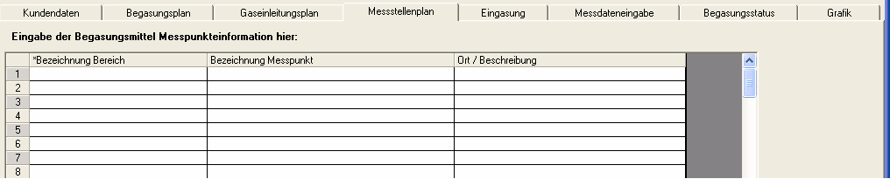
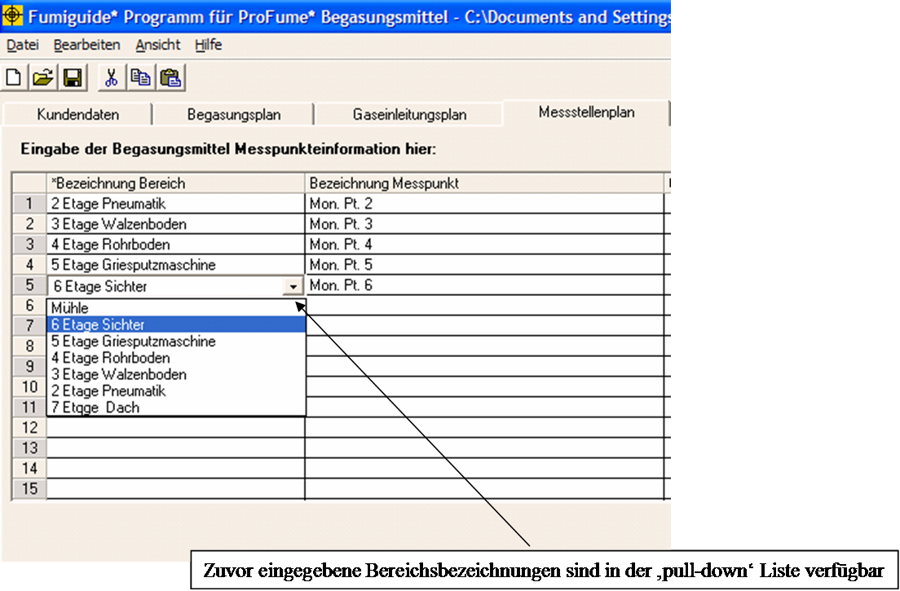
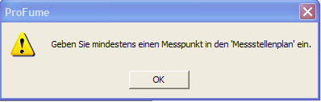

Messstellenplan-Fenster
Nachdem Sie den Gaseinleitungsplan
aufgestellt haben, können Sie zum nächsten Schritt vorrücken, der Einrichtung
des Messstellenplans. Der Messstellenplan ist das vierte Fenster innerhalb des
ProFume Fumiguide-Programms. Hier wird die Platzierung der Messleitung
eingerichtet (Messpunkte nach Bereichen).
Ziel des Messstellenplans ist es,
die Messpunkte für die einzelnen Bereiche innerhalb des begasten Raumes
festzulegen. Daneben kann hier auch eine Positionierung/Beschreibung eingegeben
werden, um festzulegen, wo die Messleitungen positioniert werden sollen.
Nachstehend sehen Sie ein Beispiel für das Messstellen-Fenster vor Eingabe der
Angaben zur Messleitung.


Bitte beachten Sie, dass in diesem Fenster mindestens eine Messpunktposition eingegeben werden muss, um eine Überwachung der Konzentration während der Einwirkzeit zu ermöglichen
